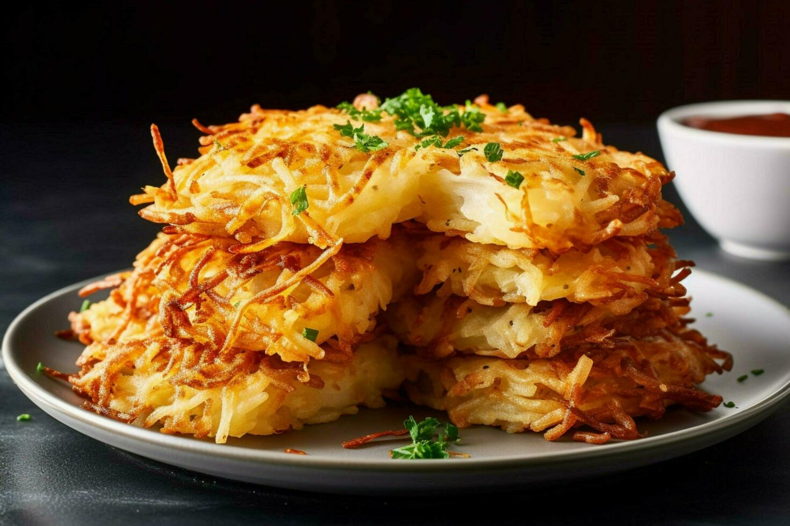

Hash brown Recipe

Crispy, golden hash browns made from shredded potatoes, cooked to perfection in a skillet.
Hash browns are a breakfast favorite, made by shredding potatoes, squeezing out the moisture, and frying them in oil or butter until crispy and golden on both sides.
Simple, satisfying, and delicious, they’re perfect on their own or as a side to eggs and bacon.
Ingredients
- 2 large russet potatoes
- Salt and pepper (to taste)
- 2–3 tablespoons oil or butter
- Optional: 2 tablespoons finely chopped onion
Steps
- Start by peeling and shredding russet potatoes. Rinse the shreds under cold water to remove excess starch, then squeeze them dry using a clean towel or cheesecloth—removing moisture is key to crispiness.
- Transfer the dried potatoes to a bowl and season with salt and pepper. Optional: mix in a bit of finely chopped onion for extra flavor.
- Heat a generous layer of oil or butter in a nonstick skillet over medium-high heat. Add the potatoes in a thin, even layer. Press them down with a spatula and cook undisturbed for 5–7 minutes until golden and crisp on the bottom.
- Flip in sections or as one piece, then cook the other side for another 5–7 minutes until equally crispy. Drain briefly on paper towels and serve hot.
Home